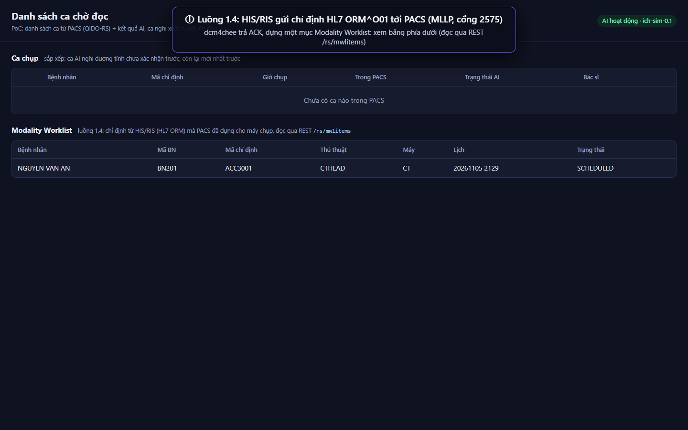
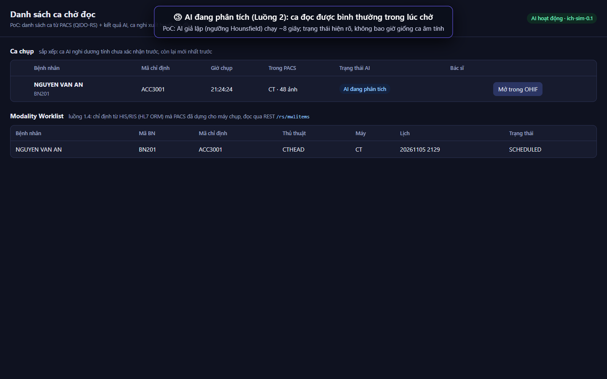
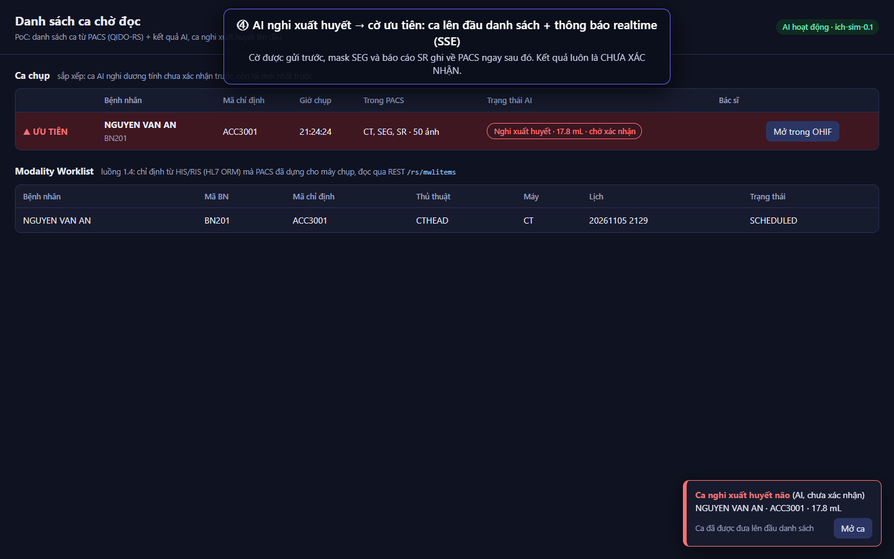
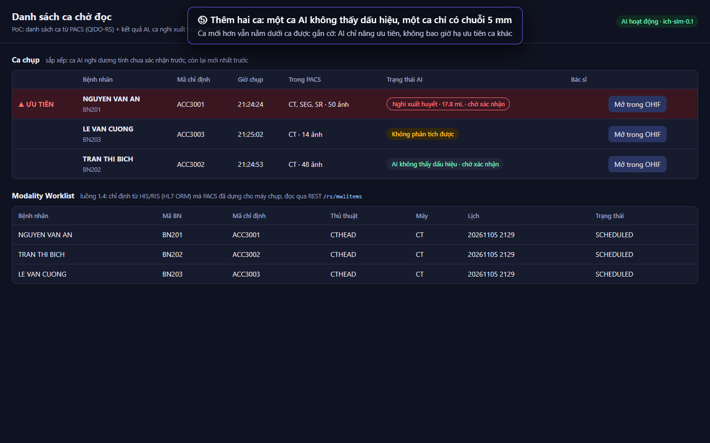
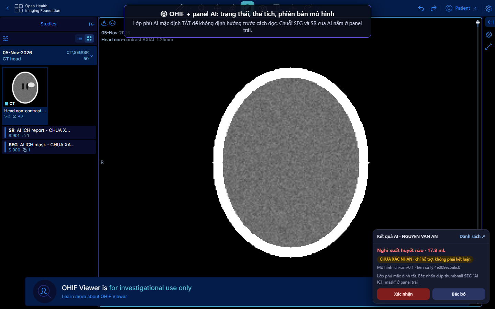
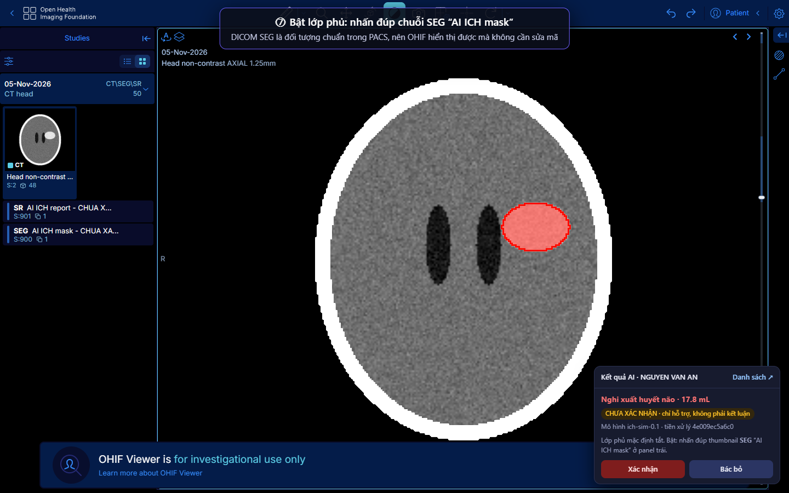
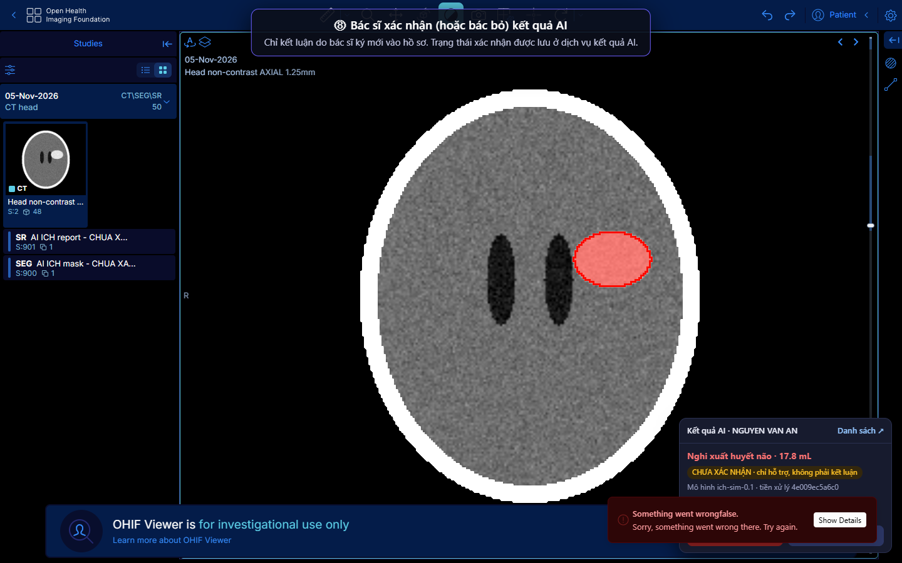
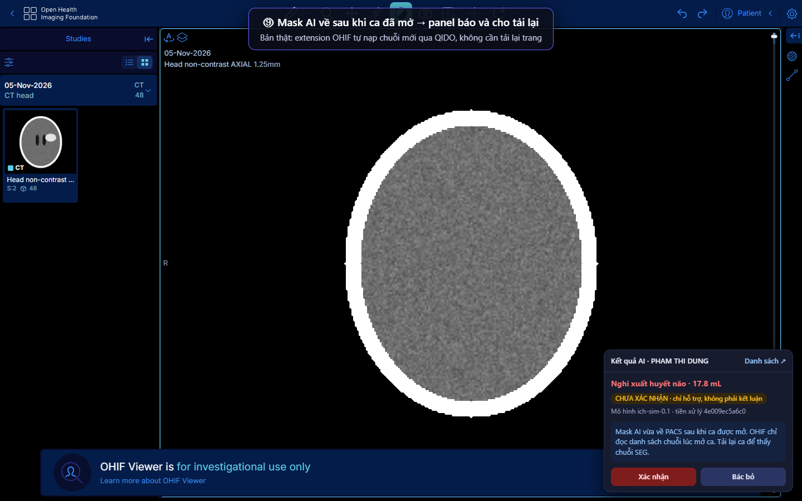
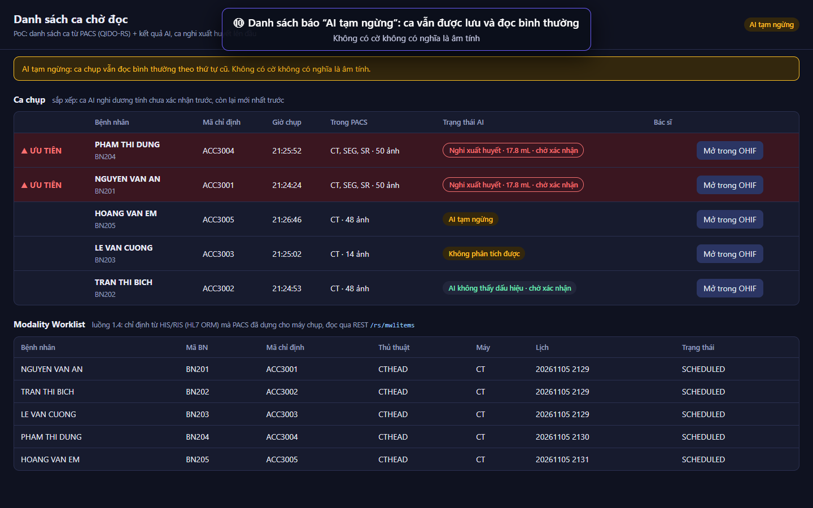
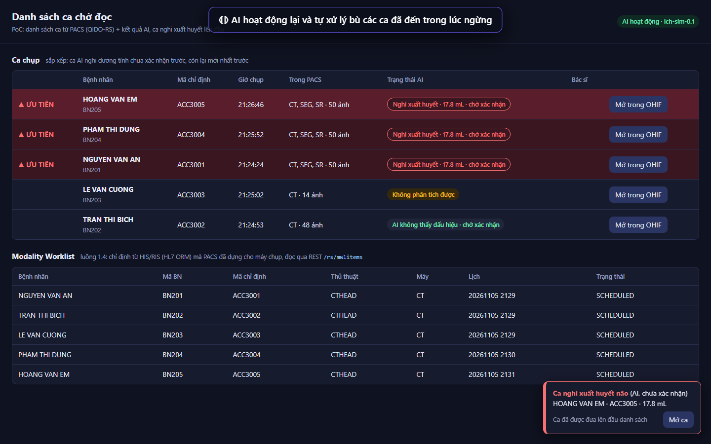

1Kết luận nhanh
Đọc ảnh từ PACS
OHIF đọc thẳng dcm4chee qua QIDO-RS và WADO-RS, chỉ cần cấu hình data source. Không viết mã.
Lớp phủ AI (DICOM SEG)
Mask AI lưu trong PACS dưới dạng SEG chuẩn, OHIF hiện thành chuỗi riêng và chỉ vẽ khi bác sĩ bật: đúng nguyên tắc "mặc định tắt".
Báo cáo SR, mask về muộn
OHIF không vẽ SR thể tích (TID 1500 tham chiếu SEG). Mask về sau khi ca đã mở không tự hiện, phải nạp lại.
Ưu tiên + thông báo
QIDO không có trường "nghi xuất huyết", OHIF không có kênh đẩy sự kiện. PoC lấp bằng dịch vụ kết quả AI + panel trong OHIF.
2Kiến thức nền: DICOM và DICOMweb
Mỗi ca chụp có cấu trúc Patient → Study (ca chụp) → Series (chuỗi ảnh) → Instance (một lát), mỗi cấp có một UID. Kết quả AI cũng là Instance, nằm trong Series riêng của cùng Study: mask là Modality = SEG, báo cáo số đo là Modality = SR. Nhờ đó kết quả AI đi theo ca chụp gốc, và trình xem nào đọc được DICOM chuẩn cũng thấy.
PACS nói hai "ngôn ngữ". Trình duyệt không nói được DIMSE, nên OHIF chỉ dùng DICOMweb.
| Việc | DIMSE (DICOM cổ điển, TCP) | DICOMweb (REST qua HTTP) |
|---|---|---|
| Ai dùng | Máy chụp, cổng Orthanc | Trình xem web (OHIF), dịch vụ kết quả AI |
| Tìm kiếm | C-FIND (cả tra worklist) | QIDO-RS: GET /studies?..., trả JSON |
| Lấy ảnh | C-MOVE / C-GET | WADO-RS: GET .../metadata, GET .../frames/1 |
| Lưu | C-STORE | STOW-RS: POST /studies |
| Worklist có ưu tiên | C-FIND MWL | MWL qua REST (/mwlitems), UPS-RS (/workitems) |
3Luồng 1.4 và hành trình một ca
Luồng 1.4 (Mục 1.4 trong tài liệu kiến trúc): HIS/RIS gửi chỉ định qua HL7, PACS dựng Modality Worklist cho máy chụp và dùng chính sự kiện có chỉ định để nạp trước các ca cũ của bệnh nhân. 1.4 không chạm trực tiếp vào trình xem. Nó bảo đảm ảnh mang đúng định danh (PatientID, AccessionNumber, Study Instance UID) và ca cũ đã sẵn tại chỗ khi bác sĩ cần so sánh. Lớp phủ và ưu tiên thuộc luồng 1.5 và 2.4–2.5.
Nét xám: luồng lâm sàng. Nét tím: luồng AI. Nét đỏ đứt: phần OHIF không có sẵn, PoC lấp bằng dịch vụ kết quả AI.
| Lúc | Việc xảy ra | Giao thức | Trình xem liên quan gì |
|---|---|---|---|
| T0 · 1.4 | HIS/RIS gửi chỉ định; dcm4chee tạo mục worklist (và có thể nạp trước ca cũ) | HL7 v2 ORM^O01 qua MLLP, cổng 2575 | Không. Chỉ chuẩn bị định danh đúng |
| T1 · 1.4 | Máy CT tra worklist để lấy tên, mã BN, AccessionNumber, Study UID | C-FIND MWL, cổng 11112 | Không |
| T2 · 1.1–1.2 | Máy CT gửi ảnh; PACS lưu xong mới báo thành công | C-STORE | Không |
| T3 · 1.3 | Bác sĩ mở ca | QIDO-RS rồi WADO-RS | Có: đọc ảnh |
| T3 · 2.1–2.3 | Song song: PACS đẩy chuỗi trục sang cổng, AI chạy | C-STORE sang Orthanc | Không. Bác sĩ không chờ AI |
| T4 · 2.5 | Cờ ưu tiên đi tới HIS/RIS (và dịch vụ kết quả AI) | HL7 ORU / FHIR; trong PoC: HTTP + SSE | Không qua PACS. Đây là khoảng trống |
| T4 · 2.4 | Mask SEG + báo cáo SR về PACS | C-STORE tới AE chỉ cho phép lưu | Thấy được nếu truy vấn lại |
| T5 · 1.5 | Bác sĩ bật lớp phủ, xác nhận hoặc sửa; mask đã sửa lưu lại | STOW-RS | Có |
Trong PoC, bản tin HL7 thật được gửi và dcm4chee trả ACK MSA|AA. Điểm cần biết: dcm4chee chỉ tạo mục worklist khi bản tin có segment ZDS (Study Instance UID, theo IHE Scheduled Workflow) hoặc IPC. Không có ZDS, PACS vẫn ACK nhưng ghi log "No Scheduled Procedure Steps … Abort MWL creation".
# HIS/RIS → PACS (MLLP, cổng 2575): bản tin PoC gửi thật MSH|^~\&|HIS|HOSPITAL|DCM4CHEE|DCM4CHEE|20261105101500||ORM^O01|MSG0001|P|2.5.1 PID|||BN201^^^HOSPITAL||NGUYEN^VAN AN||19650312|M PV1||E ORC|NW|ACC3001|||SC||^^^20261105102000^^S OBR|1|ACC3001||CTHEAD^CT so nao khong tiem thuoc^LOCAL|...|ACC3001|ACC3001|ACC3001|...|CT|... ZDS|1.2.826.0.1.3680043.8.498.414...^DCM4CHEE^Application^DICOM # PACS → HIS/RIS MSA|AA|MSG0001 # Kiểm tra worklist bằng REST (dcm4chee phục vụ MWL ở AE riêng tên WORKLIST) GET /dcm4chee-arc/aets/WORKLIST/rs/mwlitems?AccessionNumber=ACC3001 → 200, DICOM JSON, trạng thái SCHEDULED
4Trình xem nói chuyện với PACS
Mọi request đi qua reverse proxy (trong kiến trúc, proxy kiểm tra token Keycloak; PoC bỏ qua bước đăng nhập). Gốc DICOMweb của dcm4chee là /dcm4chee-arc/aets/DCM4CHEE/rs. Đặt OHIF và PACS cùng origin sau proxy thì không phải cấu hình CORS.
| Khi nào | Request OHIF gửi | Loại | Response |
|---|---|---|---|
| Danh sách ca | GET /rs/studies?PatientName=…&includefield=… | QIDO-RS | JSON: mảng các ca, key là mã tag |
| Mở một ca | GET /rs/studies/{study}/series | QIDO-RS | JSON: các chuỗi (CT, SEG, SR…) |
| Siêu dữ liệu | GET /rs/studies/{study}/series/{series}/metadata | WADO-RS | JSON: mọi tag của từng lát; dữ liệu lớn thay bằng BulkDataURI |
| Điểm ảnh | GET …/instances/{sop}/frames/1 | WADO-RS | multipart/related, điểm ảnh thô |
| Lớp phủ AI | Như trên, cho chuỗi Modality = SEG | WADO-RS | Đối tượng SEG (OHIF tải cả instance) |
| Lưu mask đã sửa | POST /rs/studies | STOW-RS | 200/202 + JSON: 00081199 đã lưu, 00081198 lỗi |
# QIDO-RS: một phần tử trong response (DICOM JSON, PS3.18 Annex F) { "0020000D": { "vr": "UI", "Value": ["1.2.826.0.1.3680043.8.498.265..."] }, // StudyInstanceUID "00100010": { "vr": "PN", "Value": [{ "Alphabetic": "NGUYEN^VAN AN" }] }, // PatientName "00080050": { "vr": "SH", "Value": ["ACC3001"] }, // AccessionNumber "00080061": { "vr": "CS", "Value": ["CT", "SEG", "SR"] }, // ModalitiesInStudy "00201208": { "vr": "IS", "Value": [50] } // số instance }
Cấu hình data source trong OHIF (file poc/viewer/ohif/app-config.js):
dataSources: [{
namespace: '@ohif/extension-default.dataSourcesModule.dicomweb',
sourceName: 'dcm4chee',
configuration: {
qidoRoot: origin + '/dcm4chee-arc/aets/DCM4CHEE/rs',
wadoRoot: origin + '/dcm4chee-arc/aets/DCM4CHEE/rs',
wadoUriRoot: origin + '/dcm4chee-arc/aets/DCM4CHEE/wado',
qidoSupportsIncludeField: true, supportsReject: true, dicomUploadEnabled: true,
imageRendering: 'wadors', thumbnailRendering: 'wadors', enableStudyLazyLoad: true,
supportsFuzzyMatching: true, supportsWildcard: true, omitQuotationForMultipartRequest: true,
},
}]
5OHIF đáp ứng tới đâu
OHIF là một web app tĩnh (React): không có server riêng, không có cơ sở dữ liệu. Nó gồm data source (trỏ tới PACS), extension (gói chức năng, ví dụ cornerstone-dicom-seg vẽ SEG), mode (bố cục một quy trình) và services dùng chung (ví dụ UINotificationService hiện toast). Vì mọi dữ liệu đến từ QIDO/WADO, OHIF hiển thị tốt những gì là DICOM chuẩn trong PACS, và không biết gì về những thứ nằm ngoài PACS như cờ ưu tiên.
| Yêu cầu | Nguồn | Kết quả | Ghi chú từ PoC |
|---|---|---|---|
| Đọc qua QIDO-RS / WADO-RS | 1.3 | Đạt | Chỉ cấu hình data source |
| Mở ca khi chuỗi sau vẫn đang tới | 1.3 | Một phần | Mở được ngay, nhưng OHIF chỉ đọc danh sách chuỗi lúc mở ca |
| Hiển thị mask AI (SEG) | 1.5, 2.4 | Đạt | SEG hiện thành chuỗi riêng; bấm đúp → hỏi xác nhận → vẽ lớp phủ màu đỏ |
| Lớp phủ mặc định tắt | P4 | Đạt | Hành vi mặc định của OHIF |
| Hiển thị báo cáo SR (thể tích) | 2.4 | Không | SR TID 1500 với ROI thể tích tham chiếu SEG: viewport SR báo "Something went wrong". Thể tích hiện qua panel AI |
| 4 trạng thái AI, không giống ca âm tính | Hợp đồng AI | Không có sẵn | PoC: panel AI tiêm vào trang OHIF |
| Xác nhận / bác bỏ kết quả AI | 1.5 | Không có sẵn | PoC: nút trong panel AI, lưu ở dịch vụ kết quả AI |
| Sửa mask, lưu lại | 1.5 | Có công cụ | OHIF có brush và xuất SEG qua STOW-RS; PoC chưa quay bước này |
| Ưu tiên ca, thông báo realtime | 1.5, 2.5 | Không có sẵn | PoC: dịch vụ kết quả AI + danh sách ưu tiên + SSE |
| Đăng nhập SSO (OIDC, Keycloak) | D9 | Chưa thử | OHIF hỗ trợ cấu hình oidc; ngoài phạm vi PoC |
| Được phép dùng để chẩn đoán chính | Pháp lý | Không | OHIF hiển thị "for investigational use only"; không có FDA/CE |
6Ưu tiên và thông báo: tự làm thế nào
Câu hỏi đầu tiên là bác sĩ chọn ca để đọc ở đâu. Nếu ở worklist của RIS và RIS nhận được cờ qua HL7 ORU hoặc FHIR, kiến trúc hiện tại đã đủ: OHIF chỉ cần hiển thị lớp phủ. Nếu RIS không làm được, hoặc đồ án không có RIS thật, nhóm tự làm theo một trong ba cách:
| Cách | Gồm gì | Ưu | Nhược |
|---|---|---|---|
| A. Extension OHIF | Panel kết quả AI, nút xác nhận/bác bỏ, toast qua UINotificationService, tự nạp chuỗi SEG mới khi có sự kiện | Bác sĩ ở trong một màn hình | Phải build OHIF từ mã nguồn |
| B. Danh sách ưu tiên riêng | Trang web liệt kê ca từ QIDO-RS + kết quả AI, ca có cờ lên đầu, thông báo; bấm thì mở OHIF qua /viewer?StudyInstanceUIDs=… | Không đụng mã OHIF; đóng vai "worklist RIS" khi chưa có RIS thật | Thêm một màn hình |
| C. UPS-RS trong PACS | Mỗi ca cần đọc là một workitem có ScheduledProcedureStepPriority; dcm4chee có /rs/workitems | Theo chuẩn DICOM | Tầng AI cần quyền ghi DICOMweb vào PACS, trái nguyên tắc P3; OHIF không đọc UPS sẵn |
Cả A và B đều dựa trên một dịch vụ kết quả AI (chính là "AI results DB" trong kiến trúc). PoC làm B, và làm A ở dạng rút gọn: thay vì build extension, proxy tiêm một script vào trang OHIF. Hành vi giống nhau, bản thật nên là extension.
# Dịch vụ kết quả AI trong PoC (poc/viewer/py/triage_api.py) GET /triage/api/studies danh sách ca từ QIDO-RS + trạng thái AI, ca có cờ trước GET /triage/api/studies/{uid} một ca, cho panel trong OHIF POST /triage/api/studies/{uid}/review {"decision": "CONFIRMED" | "REJECTED"} GET /triage/api/mwl worklist (luồng 1.4) đọc từ dcm4chee GET /triage/api/events Server-Sent Events: result, review, ai_status POST /triage/api/results/{uid} AI ghi: RUNNING | POSITIVE | NEGATIVE | UNANALYZABLE | FAILED POST /triage/api/heartbeat AI báo còn sống; mất 12 s → "AI tạm ngừng"
Thứ tự sắp xếp tuân thủ P4: chỉ ca dương tính chưa xác nhận được kéo lên đầu; mọi ca khác giữ thứ tự thường (mới nhất trước). Cờ ưu tiên được ghi trước mask và báo cáo, để thông báo không phải chờ phần định lượng. Ca quá hạn 60 giây không có kết quả hiển thị "Không có kết quả AI", không bao giờ hiển thị như âm tính.
7PoC: thành phần và ảnh chụp
PoC chạy bằng Docker Compose trên một máy. Mỗi thành phần ứng với một khối trong kiến trúc; chỗ nào đi tắt thì ghi rõ.
| Container | Vai trò | Khối trong kiến trúc | Đi tắt so với bản thật |
|---|---|---|---|
| arc, db, ldap | dcm4chee-arc-light 5.35.2 + PostgreSQL + OpenLDAP | PACS | Lưu đĩa cục bộ thay vì SeaweedFS; một nút |
| ohif | OHIF 3.13.14, image chính thức | Trình xem | Không đăng nhập Keycloak |
tools: his.py | Gửi HL7 ORM^O01 qua MLLP | HIS/RIS | — |
tools: scanner.py | C-FIND MWL, sinh CT sọ tổng hợp, C-STORE | Máy CT | Ảnh tổng hợp; ca dương tính có khối 72 HU |
| ai-worker | Phát hiện bằng ngưỡng HU, sinh SEG + SR (highdicom), C-STORE về PACS | Cổng Orthanc + dịch vụ suy luận | AI đọc PACS qua DICOMweb thay vì nhận ảnh đẩy sang Orthanc; ghi về AE AI_RESULTS nhưng cùng cổng 11112 |
| triage | Dịch vụ kết quả AI + danh sách ưu tiên + panel cho OHIF | AI results DB, cờ ưu tiên | SQLite thay vì PostgreSQL; SSE thay vì HL7 ORU tới RIS |
| proxy | nginx: một origin cho OHIF, PACS và dịch vụ triage | Reverse proxy | Không kiểm tra token |
Ảnh chụp dưới đây lấy từ một lượt chạy PoC trên stack sạch. Dòng chữ trên cùng mỗi ảnh là chú thích của lượt chạy đó, không phải giao diện. Bấm vào ảnh để xem kích thước đầy đủ.




















8Những gì PoC phát hiện
| Kiểm chứng | Kết quả |
|---|---|
| HL7 ORM^O01 tạo được mục worklist | Đạt, khi bản tin có segment ZDS (Study Instance UID). Không có ZDS: PACS vẫn ACK nhưng không tạo worklist. dcm4chee phục vụ MWL ở AE riêng WORKLIST (C-FIND và REST /aets/WORKLIST/rs/mwlitems), không phải AE DCM4CHEE |
| Máy chụp lấy định danh từ worklist | Đạt: ảnh mang đúng PatientID, AccessionNumber và Study UID do HIS cấp; gửi 48 ảnh mất 3–5 giây |
| Vòng đời AI tới khi có cờ | Khoảng 15 giây trong PoC (6 giây chờ "đủ ảnh" + 8 giây suy luận giả lập); SEG + SR ghi về PACS ngay sau cờ |
| OHIF hiển thị SEG từ AI | Đạt. Cần đặt RecommendedDisplayCIELabValue trong SEG, nếu không OHIF cảnh báo và dùng màu mặc định |
| OHIF hiển thị SR thể tích | Không đạt: viewport SR lỗi với ROI thể tích tham chiếu SEG. Số đo phải hiển thị ở panel riêng |
| Mask về sau khi ca đã mở | Phải nạp lại: OHIF không theo dõi chuỗi mới. Extension cần nghe sự kiện và nạp chuỗi SEG qua QIDO |
| Thuộc tính tổng hợp mức study trên QIDO | Có độ trễ: ModalitiesInStudy và số instance của dcm4chee có lúc chưa tính SR vừa lưu, dù truy vấn mức series đã thấy. Đừng dựa vào trường tổng hợp để biết AI đã xong; dùng dịch vụ kết quả AI |
| AI ngừng hoạt động | Đạt: ca vẫn lưu và đọc được, hiển thị "AI tạm ngừng" sau tối đa 12 giây; AI chạy lại thì tự xử lý bù |
9Cách demo cho team
Cần Docker (khoảng 3 GB RAM cho cả stack). Mã nguồn ở poc/viewer/, bản tiếng Anh của hướng dẫn này nằm trong poc/viewer/README.md. Demo chạy tay, khoảng 10 phút; người trình bày gõ từng lệnh để có thời gian giải thích.
Chuẩn bị: mở một terminal ở poc/viewer và một trình duyệt. Dùng dữ liệu sạch, và cho AI chạy chậm lại (20 giây) để kịp nói trong lúc chờ:
cd poc/viewer docker compose down -v # xoá dữ liệu cũ INFERENCE_SECONDS=20 docker compose up -d --build --wait # PACS, OHIF, AI giả lập, dịch vụ triage, proxy # danh sách ưu tiên: http://localhost:8000/triage/ OHIF: http://localhost:8000/ dcm4chee: http://localhost:8000/dcm4chee-arc/ui2/
| # | Làm | Cho xem và giải thích |
|---|---|---|
| 1 | Mở http://localhost:8000/triage/ | Danh sách trống, "AI hoạt động". Danh sách = danh sách ca từ PACS (QIDO-RS) ghép với kết quả AI. |
| 2 | bash demo/scenarios.sh order an | Luồng 1.4. Terminal in bản tin HL7 ORM^O01 và ACK MSA|AA của PACS. Trong 4 giây, bảng Modality Worklist hiện chỉ định ở trạng thái SCHEDULED. Response gốc: /dcm4chee-arc/aets/WORKLIST/rs/mwlitems. |
| 3 | bash demo/scenarios.sh scan an | Luồng 1.1. Máy chụp tra worklist (C-FIND) nên tên, mã BN, mã chỉ định, Study UID lấy từ chỉ định; rồi gửi 48 ảnh (C-STORE). Ca hiện "Chưa chạy AI", rồi "AI đang phân tích". Ca đã đọc được ngay: không ai phải chờ AI. |
| 4 | Chờ AI | Luồng 2.5. Dòng chuyển đỏ, lên đầu, có thông báo. Cờ gửi trước mask. Kết quả luôn "chờ xác nhận". |
| 5 | bash demo/scenarios.sh case bich, rồi case cuong | Ca mới hơn vẫn nằm dưới ca có cờ: AI chỉ nâng ưu tiên. "AI không thấy dấu hiệu" khác "Không phân tích được" (thiếu chuỗi trục lát mỏng). |
| 6 | Bấm "Mở trong OHIF" ở NGUYEN VAN AN. Nhấn F12 → tab Network → lọc rs/ | Luồng 1.3. OHIF gọi studies/…/series (QIDO-RS), rồi …/metadata và …/frames/1 (WADO-RS). Panel AI góc phải: trạng thái, thể tích, phiên bản mô hình. Chuỗi SEG và SR của AI ở panel trái; lớp phủ đang tắt. |
| 7 | Nhấn đúp "SEG AI ICH mask", chọn Yes, cuộn vài lát | Luồng 1.5 / 2.4. Vùng đỏ là DICOM SEG chuẩn trong PACS; OHIF hiển thị mà không sửa mã. Tuỳ chọn: nhấn đúp SR để cho thấy OHIF không vẽ được báo cáo thể tích. |
| 8 | Bấm "Xác nhận", rồi "Danh sách ↗" | Quyết định của bác sĩ được lưu; ca rời nhóm ưu tiên và hiện "Đã xác nhận XH". |
| 9 | bash demo/scenarios.sh case dung, rồi mở ca mới trong OHIF ngay | Ảnh mở được ngay, panel báo "AI đang phân tích". Khi mask về, panel báo mask đến sau khi ca đã mở (OHIF chỉ đọc danh sách chuỗi một lần). Bấm "Tải lại ca" để thấy SEG. |
| 10 | bash demo/scenarios.sh ai-down, rồi case em | Trong 12 giây, banner "AI tạm ngừng" hiện. Ca mới vẫn lưu và đọc được, hiển thị "AI tạm ngừng", không bao giờ giống ca âm tính. |
| 11 | bash demo/scenarios.sh ai-up | AI chạy lại và xử lý bù ca đến trong lúc ngừng; ca được gắn cờ. |
Muốn chạy tự động không cần thao tác: bash demo/scenarios.sh all (các ca an, bich, cuong và tình huống AI ngừng).
10Việc tiếp theo
- Hỏi bệnh viện: HIS/RIS hiện tại có nhận cờ ưu tiên qua HL7 ORU hoặc FHIR không. Câu trả lời quyết định có cần danh sách ưu tiên riêng.
- Chuyển panel tiêm script thành extension OHIF thật (panel module +
UINotificationService+ tự nạp chuỗi SEG mới). - Thử OHIF với Keycloak (OIDC) sau reverse proxy, đúng như kiến trúc.
- Thử bước bác sĩ sửa mask và lưu bằng STOW-RS; quyết định mask đã sửa nằm cạnh mask AI hay thay thế nó.
- Nối PoC này với bản mẫu cũ: thay AI đọc PACS bằng quy tắc xuất của dcm4chee sang Orthanc.
11Tài liệu tham khảo
- DICOMweb: tổng quan · QIDO-RS · WADO-RS · STOW-RS
- DICOM PS3.18 Web Services · Annex F: DICOM JSON · Chương 11: Worklist Service (UPS-RS)
- dcm4chee REST API (Swagger) · HL7 → MWL · Nạp trước ca cũ theo HL7 · Chạy trên Docker
- OHIF: data source DICOMweb · tham số URL · extensions · UINotificationService · đăng nhập OIDC · FAQ (pháp lý)
- HL7 v2.5.1 ORM^O01 · ORU^R01 · FHIR ServiceRequest
- highdicom (tạo SEG, SR) · dicomweb-client · Cornerstone3D